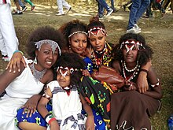

Introduction

The Oromo people are one of the largest ethnic groups in the Horn of Africa, primarily residing in Ethiopia, Kenya, and Somalia. They have a unique cultural identity shaped by centuries of migration, social organization, and political influence. One of their most notable contributions is the Gadaa system, a traditional democratic method of governance that regulates leadership, social roles, and political decision-making.
History
The history of the Oromo people dates back several centuries. Originally, they were pastoralist and semi-nomadic, migrating across vast regions of East Africa. In the 16th century, the Oromo expanded into central Ethiopia, integrating into different societies while maintaining their cultural heritage. Their resistance against external domination, including during the era of Emperor Menelik II, has shaped their historical narrative.
Language
The Oromo language, known as Afaan Oromo, is part of the Cushitic branch of the Afroasiatic language family. It has multiple dialects and is one of the most widely spoken languages in Africa. In Ethiopia, it has gained official recognition and is used in education, media, and government institutions.